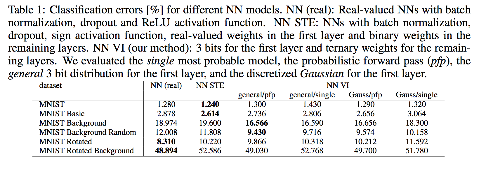
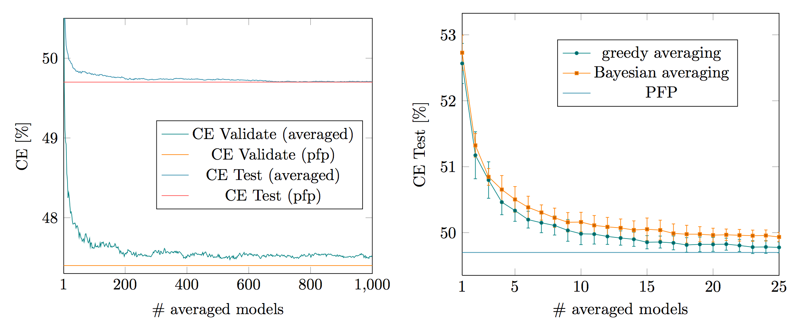
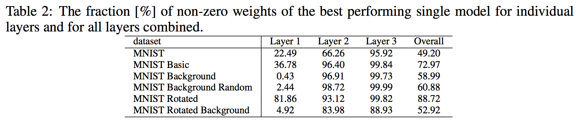

Discrete-Valued Neural Networks Using Variational Inference
Мотивация
Хотим дискретные сети с дискретными весами (например, \(w \in \{-1, 0, +1\}\), но можно и более широкий спектр рассмотреть) и бинарными активациями. Хотим потому что такие сети могут быстрее работать на специализированном железе, а места занимать меньше.
Математика
Делаем вар. вывод на веса:
\[ \log p(y|x) \ge \mathbb{E}_{q(W)} \log p(y|W, x) - D_{KL}(q(W)||p(W)) \to \max_q \]
Ожидаемое правдоподобие нельзя посчитать аналитически, т.к. эта сумма экспоненциально большого числа разных конфигураций нейросетей. Однако, можно заметить, что можно применить ЦПТ к преактивациям: обозначим нейроны \(k\)-го слоя за \(x^{(k)}\), а за \(a^{(k)}\) – преактивации этого слоя. То есть, \(x^{(k)} = \text{sign}(a^{(k)}) = \text{sign}(W^{(k)} x^{(k-1)})\) (bias’ы “вшиты” в \(W^{(k)}\)). Тогда преактивации \(a^{(k)}\) есть сумма большого количества независимых случайных величин и можно понадеяться, что они будут распределены нормально. Мат. ожидание преактиваций можно посчитать аналитически:
\[ \mathbb{E} a^{(k)} = \mathbb{E} W^{(k)} x^{(k-1)} = \mathbb{E} W^{(k)} \mathbb{E} x^{(k-1)} \]
Ковариация в общем случае будет полной матрицей (кажется, что следующую формулу должно быть просто посчитать в замкнутом виде, но я знаю, как записать формулу для результата в матричном виде) \[ \mathbb{E} a^{(k)} (a^{(k)})^T = \mathbb{E} W^{(k)} x^{(k-1)} (x^{(k)})^T (W^{(k)})^T = \mathbb{E}_W \left[W^{(k)} \mathbb{E}_x [x^{(k-1)} (x^{(k-1)})^T] (W^{(k)})^T\right] \]
Авторы статьи тоже не захотели считать полную матрицу ковариаций, поэтому ограничились диагональным приближением, т.е. предположили, что преактивации независимы друг от друга 1. Тогда второй момент \(i\)-й преактивации
\[ \begin{align*} a^{(k)}_{i} &= \mathbb{E} (W^{(k)}_i)^T x^{(k-1)} (W^{(k)}_i)^T x^{(k-1)} = \mathbb{E} \text{Tr}\Bigl[ (W^{(k)}_i)^T x^{(k-1)} (W^{(k)}_i)^T x^{(k-1)} \Bigr] \\ &= \mathbb{E} \text{Tr}\Bigl[ (W^{(k)}_i)^T x^{(k-1)} (x^{(k-1)})^T W^{(k)}_i \Bigr] \\ &= \text{Tr}\Bigl[ \mathbb{E}_W \left[W^{(k)}_i (W^{(k)}_i)^T \right] \mathbb{E}_x \left[x^{(k-1)} (x^{(k-1)})^T\right] \Bigr] \end{align*} \]
Обе матрицы диагональны в силу независимости (предполагаемой или модельной) всех случайных величин. Можно считать, что входы имеют нулевую дисперсию.
После применения к преактивациям функции знака sign, наши нормальные случайные величины превращаются в нечто среднее между Радемахеровские (знаковые Бернулли) с вероятностью +1 равной \(\text{erf}\left(\tfrac{\mu}{\sqrt{2} \sigma}\right)\) (без предположения о независимости преактиваций найти распределение самих активаций было бы труднее). Моменты этой величины используются при подсчёте распределения преактиваций следующего слоя.
Наконец, в самом конце нашей сети стоит софтмакс. Распределение его выходов аналитически посчитать не получится, поэтому авторы просто раскладывают его в ряд Тейлора до второго члена вокруг мат. ожидания преактиваций.
Итого, вся эта схема является своего рода приближённым аналитическим интегрированием ожидаемой реконструкции (KL считается аналитически), где мы выинтегрируем дискретность, поэтому и дифференцировать через них не надо, и дисперсия получается маленькой (мы тут нигде Монте-Карло оценки не используем, хочу заметить!)
Распределения
Пока это была общая математика, применимая к любым распределениям. А можно рассматривать конкретные, например, набор весов \(\mathbb{D} = \{-0.75, -0.5, -0.25, 0, 0.25, 0.5, 0.75\}\) использует всего 3 бита (и ещё даже осталось бы место на ещё одно значение, но авторам нравится симметрия). Авторы рассматривают 2 вида распределений для приближения \(q(W)\):
- Произвольное распределение: для каждого исхода хранится своя вероятность, например, для примера выше их было бы 7. Вероятности, конечно же, должны суммироваться в единицу, поэтому чтобы свести оптимизационную задачу с ограничениями к безусловной оптимизации мы будем оптимизировать по логитам, которые пропустим через софтмакс для получения этих суммирующихся в 1 весов. Заметим, по-сути у нас в обчных сетях каждому весу соответствует одно число – он сам – а тут столько чисел, сколько значений он может принимать \(|\mathbb{D}|\). Неприятно.
- Дискретизированное Нормальное: чтобы количество параметров не зависело от количества значений, нужно как-то ограничить гибкость распределения на них. Например, ограничить какое-нибудь известное распределение вроде Гауссовского на \(\mathbb{D}\). Тогда логиты (аргументы софтмакса) будут иметь вид \(-(x - \mu_w)^2 / (2 \sigma_m^2)\) где \(x \in \mathbb{D}\), а \(\mu_w, \sigma_w^2\) – единственные 2 параметра этого распределения.
- Сдвинутое Биномиальное: а ещё можно взять биномиальное распределение и сдвинуть его. Если \(\text{Binomial}(2n, p)\) даёт семплы от 0 до 2n, то \(\text{Binomial}(2n, p)-n\) даёт семплы от \(-n\) до \(n\), например для \(n=1\) можно получить тернарные веса \(\{-1, 0, +1\}\). Такой подход вообще использует только один параметр \(p\) – с одной стороны это плюс по эффективности, а с другой стороны – минус по выразительности. Некоторые входы нейросети могут быть совсем неревантны и их веса хотелось бы занулять, а такое распределение этого делать не умеет. Поэтому авторы не экспериментируют с ним для первого слоя.
Авторы утверждают, что как правило весам входа нужна высокая точность, а всем остальным сгодится уменьшенная. Поэтому распределение весов первого слоя стоится с помощью одноо из первых двух распределений и 7-значного представления, а веса всех остальных слоёв используются тернарные.
В качестве априорных были выбраны более-менее согласованные распределения. Так, для первого слоя в качестве априорного \(p(W_1)\) было использовано то самое дискретизованное нормальное со среним 0 и настраиваемой дисперсией \(\gamma\), а для следующих слоёв \(\text{Binomial}(2, 0.5)\)
На обучении получается такой ансамбль, который авторы называют PFP – probabilistic Forward Pass. В нём можно приближённо посчитать мат. ожидание софтмакса (по-Байесовски, то бишь) без семплирований за счёт “знания” распределений во все моменты времени. На тесте можно делать так же (но тогда быстрее не станет), либо взять наиболее вероятную конфигурацию, т.е. вместо вероятностных весов на каждом слое используется мода \(q(W^{(k)})\).
Хаки
Для большей устойчивости обучения авторы деляет преактивации на корень из количества входных нейронов – дескать, чтобы не подбираться слишком близко к областям насыщения erf. На тесте это ни на что не влияет, ведь там важен только знак преактивции.
Далее у авторов начинаются проблемы слишком сильного априорного распределения, KL-дивергенция с которым (учитывая большое количество свободных параметров в сети) забарывает правдоподобие. Поэтому предлагается взять \(\lambda\)-взвешенное среднее ожидаемой конструкции и KL-дивергенции с априорным, что как бы соответствует повторению обучающей выборки \(\lambda / (1-\lambda)\) раз. Но делают авторы так не всегда.
Кроме того, авторы используют дропаут. Вроде, как обычно.
Эксперименты
Сравниваются на MNIST’е (и каких-то его вариантах) с непрерывными сетями (NN real, с батчнормом и дропаутом!) и какой-то ранней работой по бинаризации нейросетей с помощью Straight Through Estimator’а (NN STE). Для бейзлайнов тюнят гиперпараметры с помощью Байесовской оптимизации. Предлагаемый метод обозначается NN VI (сравнивают разные комбинации распределений на веса и PFP против конфигурации из мод).
Во всех случаях в нейросети было 2 скрытых слоя (размерности 1200, думаю, достаточно для ЦПТ) и один выходной (плюс входы).

Ансамбли
Окей, PFP – это хорошо, но оно не быстрее обычных сетей, да и параметров слишком много просит. Можно попробовать взять ансамбль из нескольких нейросетей и ими постараться приблизить PFP. Авторы взяли MNIST Rotated Background – самый сложный из имеющихся датасетов – посмотрели, что там происходит с качеством по мере роста ансамбля.

Здесь изображена Classification Error (CE). На первом графике – обычные ансамбли, где мы просто заранее независимо насемплировали кучу моделей из \(q(W)\) и смотрим на качество такого ансамбля. Получается норм, но моделей нужно слишком много. Поэтому на втором графике авторы показывают, насколько хорошо работает greedy averaging – семплируют 100 сетей из \(q(W)\), оставляют только те, что ведут к низкой ошибке 2.
Разреженность
Потом авторы берут одну лучшую модель и смотрят, как много там нулей в весах.

Резюме
Очень круто потому что я думал о чём-то похожем. Тем не менее у статьи есть немало минусов:
- Сделано много предположений – на практике они выполняться не будут, а будут вносить bias в градиенты.
- Эксперименты только на разных видах MNIST’а – нет экспериментов со свёрточными сетями, а есть сомнения в том, что метод с ними вообще будет работать.
- Нет более эффективных бейзлайнов вроде гумбель-софтмакса – это особенно важно, ведь там можно контроллировать качество приближения
Надо, правда, понимать, что эта статья ещё не прошла review и её вполне могут reject’нуть. Но ценность идеи это не уменьшает.